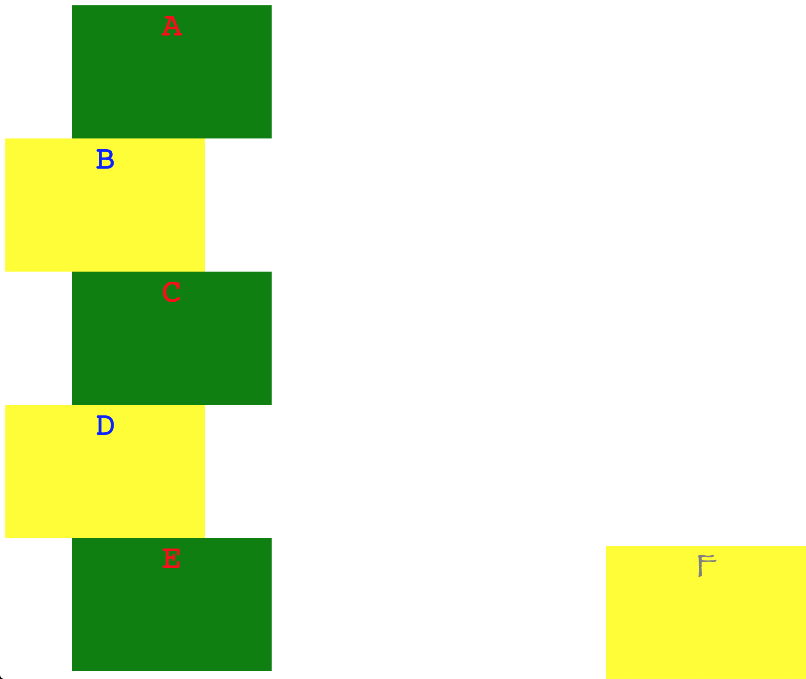

Due date
B1: Monday, April 1, 12:10 PM
B5: Tuesday, April 2, 12:10 PM
Deliverables
Starter code
Resources
Overview
In this assignment, you will recreate a webpage consisting of HTML elements styled with CSS.
Requirements
To receive full credit on this assignment, you must create a webpage that displays the following:

Notes on this image:
- The red lines/numbers are NOT part of the webpage. They are just there for reference.
- As suggested by the labels, each box should be 300 pixels wide and 200 pixels tall.
- The text in each box should be in monospace font, and centered horizontally.
- The "odd" boxes should be green with hotpink text.
- The "even" boxes should be yellow with blue text. They should also be horizontally offset 100 pixels to the right.
- The final box is of type "even," except its text is in fantasy font, grey in color, and larger.
- The final box should also stick to the bottom-right corner of the screen, even if the window is resized.
- The space at the bottom of the window is not any particular height. If you shrink the browser window, then that space should shrink.
- You may notice that there seems to be a tiny bit of extra space on the upper and left sides of the window. This is an automatic 8 pixel margin given to the body of any webpage, and it will happen on its own. You do not need to write code to make this space happen.
Code
- Change the name of hw2-FirstnameLastname.html to use your name.
- The HTML document title (the one that shows up in the browser tab) should be HW2: Lastname (substitute your last name)
- Create a CSS file (in a sub-folder called css), and link it into the HTML file. Most of the interesting code for the assignment will be written here.
Style
Your code will also be graded on style, as usual. Refer to the
Style Guidelines for details.
Organization
A small part of your grade will come from good file organization. Refer to the
Organization Guidelines for details.
Tips
Here are some helpful pointers for this assignment:
- Think carefully about how to structure your HTML and CSS code to be as efficient as possible.
- Take it one step at a time. Start simple, like using HTML to get the letters A-F appear on the screen in a vertical line, with no formatting. Then start messing with CSS to adjust div sizes, colors, positions, etc.
- Start general, and work your way towards specifics. In other words, work on things that are common to all boxes before moving on to "odd vs. even," etc.
- Test after every small change you make!
- If you don't remember how to do something, review your code from class or ask questions!